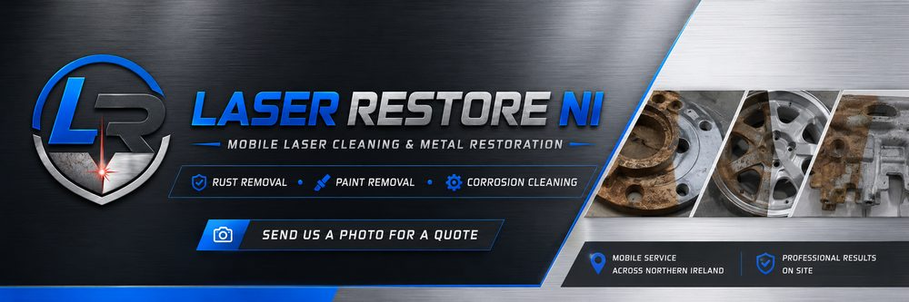
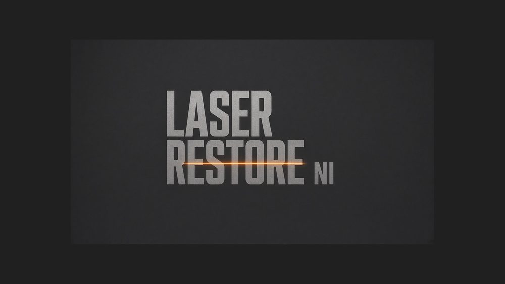
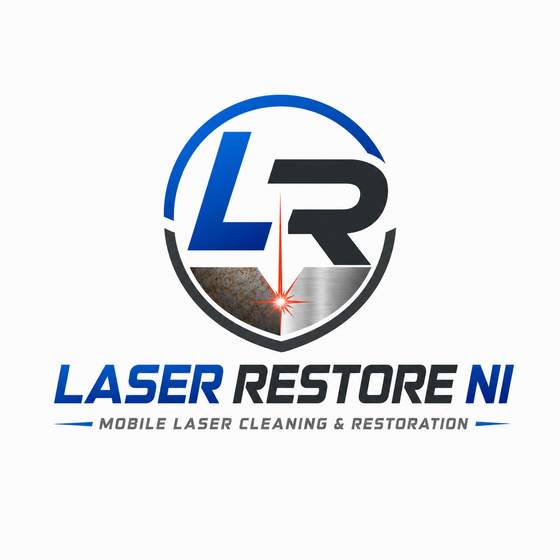
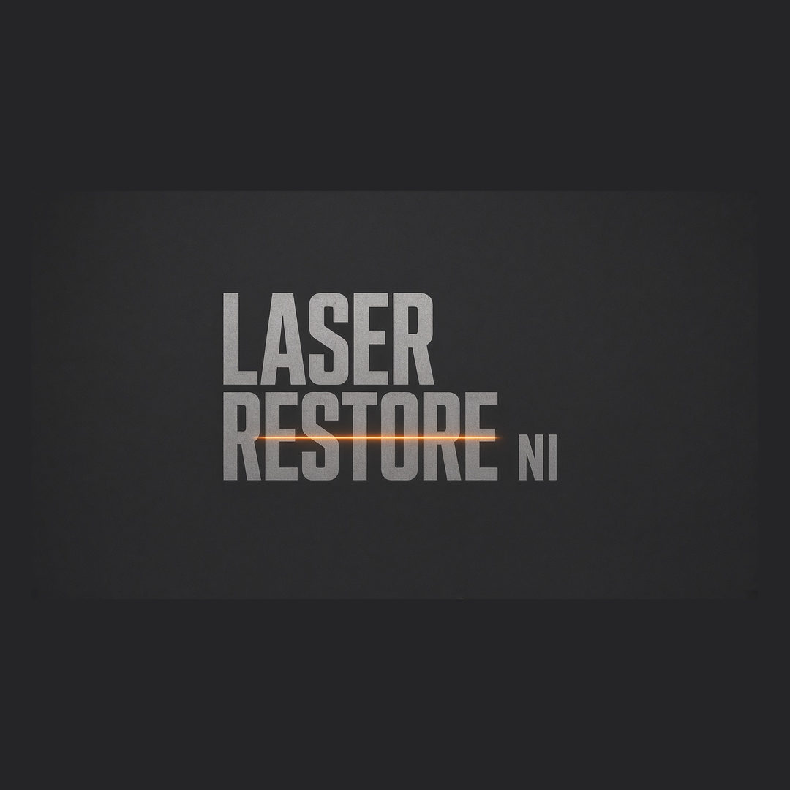

Gallery
We will only publish photos of our own completed work with customer permission. No stock photos pretending to be Laser Restore NI jobs.
Brand imagery only for now. Real job photos will replace these after first paid cleans (with customer permission).




Slot reserved — farm gate pair
Before / after to be added after first paid job + written permission.
Slot reserved — trailer / chassis / weld prep
No stock imagery pretending to be Laser Restore work. Customer-approved shots only.
Honest gallery. Brand covers and the LR logo are shown as placeholders only. We will not publish stock photos as if they were our jobs. If you are a customer and happy to share photos, say so when you book.